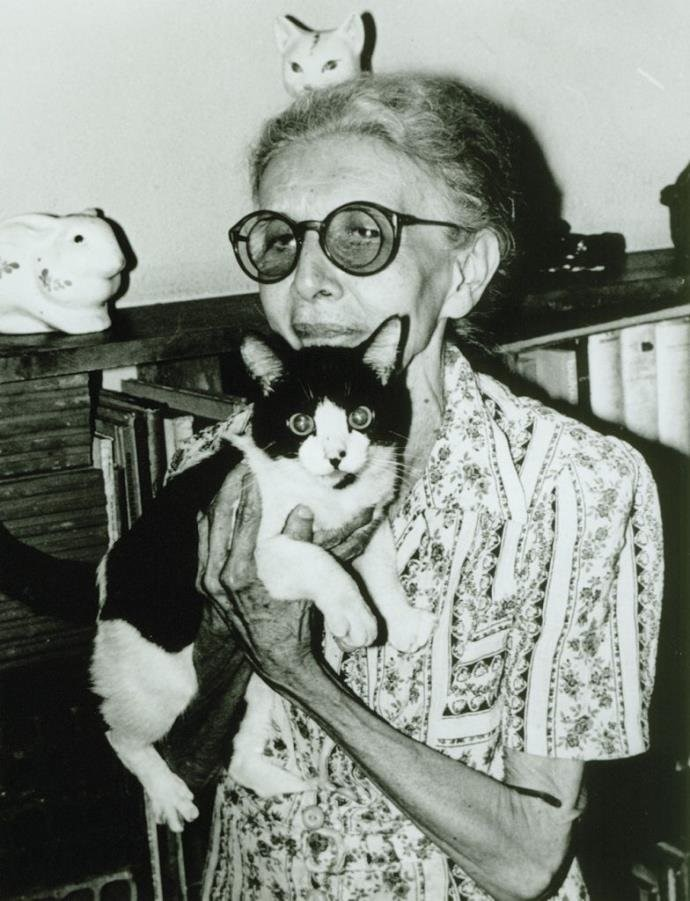

Nise da Silveira nasceu em Maceió, 15 de fevereiro de 1905 e faleceu no Rio de Janeiro, 30 de outubro de 1999. foi uma renomada médica psiquiatra brasileira, aluna de Carl Jung.
Nise da Silveira nasceu em Maceió, 15 de fevereiro de 1905 e faleceu no Rio de Janeiro, 30 de outubro de 1999. foi uma renomada médica psiquiatra brasileira, aluna de Carl Jung.
"É necessário se espantar, se indignar e se contagiar, só assim é
possível mudar a realidade"
- Nise da Silveira
Nise era bastante estudiosa e foi admitida na Faculdade de Medicina da Bahia aos 21 anos. Dedicou sua vida à psiquiatria e manifestou-se radicalmente contrária às formas que julgava serem agressivas em tratamentos de sua época, tais como o confinamento em hospitais psiquiátricos, eletrochoque, insulinoterapia e lobotomia. Nise ainda foi pioneira ao enxergar o valor terapêutico da interação de pacientes com animais. Foi membro fundadora da Sociedade Internacional de Expressão Psicopatológica em Paris.
Sua pesquisa em terapia ocupacional e o entendimento do processo psiquiátrico por meio das imagens do inconsciente deram origem a diversas exibições, filmes, documentários, audiovisuais, cursos, simpósios, publicações e conferências.